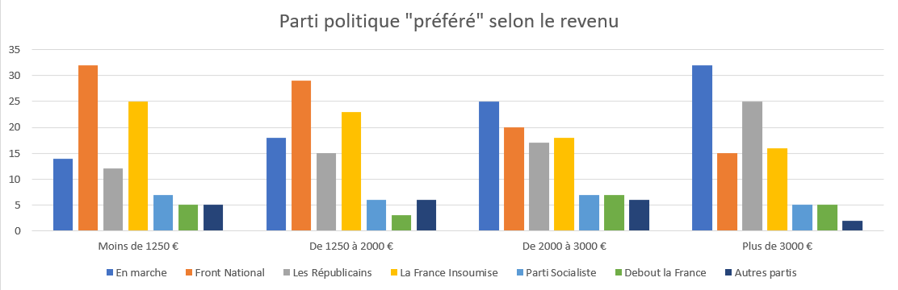
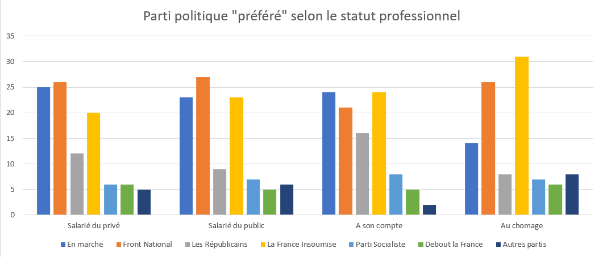

Bu grafikte, dilimler arasında bir korelasyon [yaş ve siyasi partiler arasında bir bağlantı] olduğunu görebiliyoruz.Nitekim, vatandaşlar yaşlandıkça, Cumhuriyetçilere oy verme eğilimleri daha fazladır ve tam tersine, ne kadar genç olurlarsa, itaatsiz olan Fransa'ya, yani aşırı sola oy verme eğilimindedirler...

Görünüşe göre erkeklerin Ulusal Ralli için oy verme olasılığı kadınlardan daha fazladır ve öte yandan, Sosyalist Parti'ye erkekler önemli ölçüde daha fazla oy veriyor gibi görünüyorlar.
Burada, nüfusun belirli kesimleri arasında bir korelasyon olduğunu görüyoruz. Ulusal Meclis seçmenlerinin oranı maaşla ters orantılıdır ve Cumhuriyetçiler partisi(Les Républicains) için tam tersine.


Seçmenlerin cinsiyetlerine göre dağılımını burada görebiliriz. Burada, seçmenlerin yaşlandıkça kadın cinsiyetin baskın olduğunu gözlemliyoruz.

Bütün bu korelasyonlar, Fransız nüfusunun belirli kesimlerinin belirli gruplarla ve dolayısıyla siyasi fikirlerle "uyum içinde" hissettiğini gösteriyor. Bu hiçbir şekilde herhangi bir sorun değildir, ancak bu sistemin, homojen bir şekilde yönetmesi gereken bir halkı demokrasi kavramına göre bölerek, Fransız toplumunda var olan farklılıkları neredeyse vurguladığı dikkat çekicidir. Aslında, bugün yalnızca kazananlar gerçekten dışarıdaki güce sahip oluyor, öyle görünüyor ki kazananlar her zaman bir bütün olarak insanların beklediği gibi de değildir.
Bu, kendimize Fransız seçim sisteminin geçerliliği sorusunu sormamıza neden olabilir. Belki daha iyileri vardır…
Daha verimli olan alternatif sistemleri tartışan harika ScienceEtonnante videosunu öneriyoruz. Bu problem aslında matematik yardımıyla modellenmesi kolaydır ve belki de bu eski sistemi yeniden biçimlendirme zamanı gelmiştir.